Bind logo: dovetail or ring?
The left column is the dovetail study (../board.html). The right column is the earlier ring draft, rebuilt so it has the same parts: lockup, states, animated logo, loader, swipe and a hero. Same tagline copy and demo text on both hero studies. Everything is shown at the same size.
Fairness note. The dovetail got more iteration, and its swipe language (tickets, the bump) was designed with it. The ring's swipe, loader and hero were added only for this comparison, with the ring's own palette, fonts and card style. The ring's tagline here is "Connect once. Get back to work."; the dovetail's is "Hand off the busywork."
1. Logo and lockup
Dovetail STUDY 1


 643216
643216 mono
monoRing EARLIER DRAFT


 643216
643216 mono
mono2. As a status light
Both marks double as a status indicator, with a label always beside them. Dovetail: the yolk piece's distance from the seat. Ring: the latch's position.
Dovetail
 On it
On it Done
Done Paused
Paused Needs you
Needs youRing
 Waiting
Waiting Done
Done Paused
Paused Refused
Refused3. Animated logo (press replay)
Dovetail: slide and seat, 0.75 s mark, about 1 s lockup


Ring: draws, latch drops, settles, 1.5 s

4. Loading icon
Dovetail: tick-tock, 1.4 s
 16244896
16244896
Ring: latch lifts and seats, 1.4 s
 16244896
16244896
5. Landing hero, live (scroll inside each frame, or open the full boards)
Dovetail
6. Side by side, assessed
My assessment, not a measurement. Where a row says "tested", I ran it in a browser here.
| Question | Dovetail | Ring |
|---|---|---|
| What it says | Two things joined cleanly; work changes hands. Matches "connectivity layer" and "hand off the busywork". | A loop that closes: a connection made. Clear and friendly, but the richer story (open means a request, closed means committed) is about approvals, the framing you moved away from. |
| Distinctiveness | High. Interlocking two-tone block is unusual for software; reads as joinery. Risk: some will read it as a clapperboard or an "H" before the dovetail. | Lower. A ring with an accent is a common shape. Elegant, easy to forget. |
| Small sizes | Holds at 16 px (tested): two flat colour blocks. | Holds at 16 px (tested), but the latch becomes a speck, so the idea nearly disappears. |
| Animation | Strong: a piece slides and seats, a done-knock, a tick-tock loader. All translate-only. | Good: stroke-draw and latch drop. Fewer distinct moments; the loader is a latch bob. |
| Status as a light | Position and colour; "On it" and "Paused" offsets are close (10 vs 4 units). Needs a colour-blind user test. | Position and colour; "waiting" and "refused" both lift the latch (refused is askew). Same caveat. |
| Palette and type | Olive, stainless sage, one yolk. Bricolage Grotesque, Instrument Sans, Plex Mono. Loud, kitchen-ticket feel. Yolk on light fails contrast as text, so it is never text. | Bone, ink, copper, status colours. Newsreader, Geist, Geist Mono. Quiet, editorial, premium. Copper passes as text (4.82). |
| Tone | Confident, a little playful, craft. Could feel too bold for a conservative buyer. | Calm and refined. Could feel generic or "fintech-adjacent". |
| Build effort | Mark and tokens are done; tickets and the bump need building. Fonts are bundled. | Mark and tokens are done; cards are ordinary. Fonts are bundled. |
| My recommendation | Dovetail. It is the more distinctive idea (I did not run a market or trademark search to confirm that), and it carries the loader, swipe and status system with it. | The safer pick if you prefer a quieter, more premium tone. It would need its own gesture and loader story to match. |
Not tested for either: other operating systems' font rendering, colour-blind users, device performance, trademark clearance.